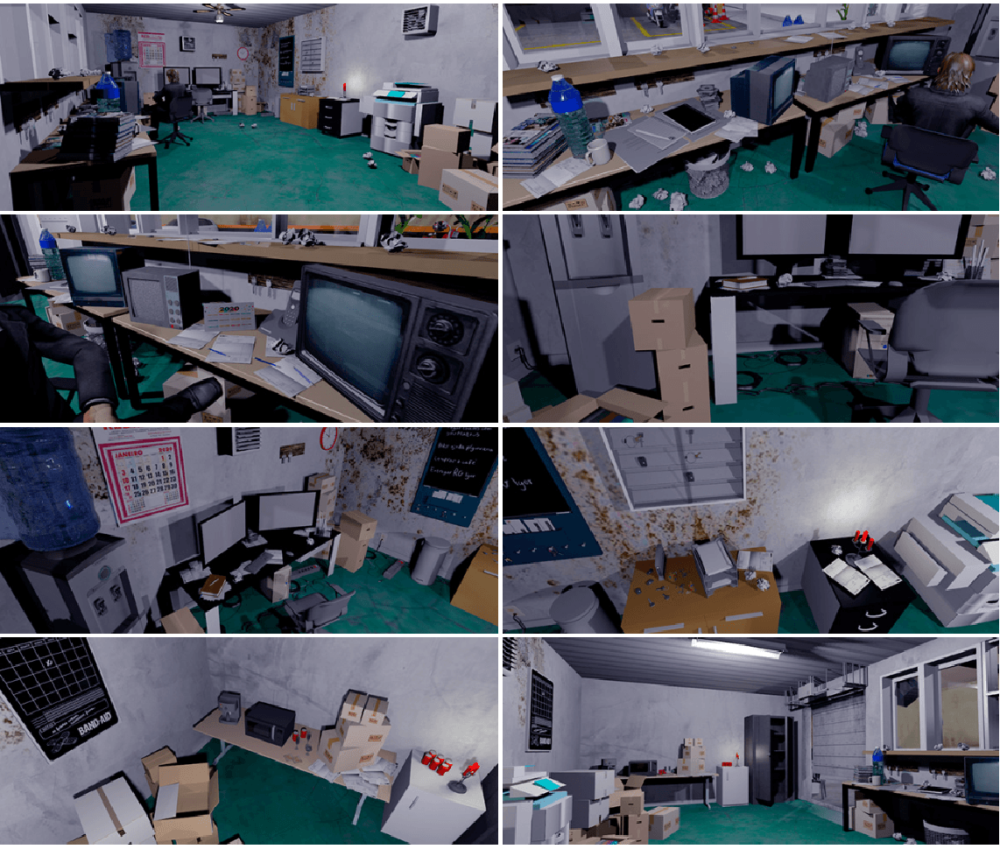
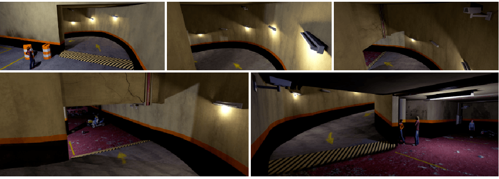

pague com sangue // cenografia
Uma das principais locações do longa metragem de terror "Pague com Sangue" (roteiro de Lucas Satolo), o Estacionamento Montez esconde a parte mais sombria da trama. É onde a família de vampiros presente no filme captura suas vítimas por meio de uma fachada comercial. Ao adentrar o lugar, é possível ver espaços abandonados, desleixo nas pinturas, raxaduras e ratos por todo o canto. É um ambiente extremamente ameaçador.
referências
locações reais (base para o projeto)
Uma das principais locações do longa metragem de terror "Pague com Sangue" (roteiro de Lucas Satolo), o Estacionamento Montez esconde a parte mais sombria da trama. É onde a família de vampiros presente no filme captura suas vítimas por meio de uma fachada comercial. Ao adentrar o lugar, é possível ver espaços abandonados, desleixo nas pinturas, raxaduras e ratos por todo o canto. É um ambiente extremamente ameaçador.
planta do estacionamento
Como o espaço real é muito largo, decidimos usar apenas uma metade para o térreo do Estacionamento Montez. Essa planta foi feita em cima da locação real, mas representa apenas o espaço cenografado. O Banheiro e a Guarita são divisões já existentes no espaço, mas que seriam feitas em estúdio devido ao tamanho real atrás das portas.
fachada (térreo)

guarita (térreo)
banheiro (térreo)
rampa
subsolo
sala de coleta (subsolo)
É a real razão pela qual o Estacionamento Montez existe, sendo um lugar novo, bem cuidado, e com elementos da melhor qualidade possível. Os vampiros são extremamente limpos e tomam cuidado com o que ingerem, então o ambiente é produzido inteiro de azulejo branco e a maioria de seus móveis em inox - sendo mais fácil de limpar e esterilizar.
Confira o projeto completo em alta resolução no meu behance.